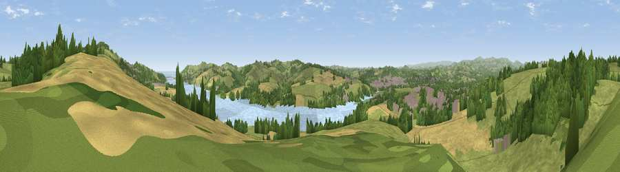

Viewpoint near Kingsteignton
#9524 in England · top 19% of its area beats it · near KingsteigntonThe view, rendered

A 360° render of this exact spot computed from the terrain model, tree cover and land cover — summer colours, afternoon light, calibrated against photographs of famous viewpoints. Real trees, hedges and buildings will differ in detail.
The panorama
Grey silhouette: terrain skyline in each direction (720 bearings, Earth curvature and refraction included). Dashed green: skyline with trees (+15 m) and buildings (+8 m) as obstacles. Blue strip: how far the ground is visible on each bearing.
Where the view opens
Wedge length = distance to the farthest visible ground on that bearing (vegetation-aware). Rings at 10, 25 and 50 km.
What fills the view
48% grassland · 25% woodland · 12% cropland · 10% water · 5% built-up ·
Angular shares of the visible panorama (visual magnitude), not map area. Landscape diversity 0.59 (0–1 Shannon).
Key numbers
More beautiful places nearby
The staircase of upgrades: each row has a higher view potential than everything closer. Driving times are estimates from straight-line distance, calibrated against real road routing — check an actual route before setting out.
| Place | Direction | Drive | Score |
|---|---|---|---|
| Viewpoint near Bishopsteignton | ENE · 1 km | ~3 min | 69.5 |
| Viewpoint near Bishopsteignton | ENE · 2 km | ~6 min | 79.9 |
| Viewpoint near Shaldon | ESE · 5 km | ~11 min | 83.8 |
| Viewpoint near Stokeinteignhead | SE · 5 km | ~12 min | 84.1 |
| High Peak | ENE · 25 km | ~41 min | 85.3 |
| Golden Cap | ENE · 55 km | ~77 min | 88.7 |
| The Knoll | ENE · 66 km | ~89 min | 91.0 |
50.54917, -3.57269 · source: screening · position refined by local search. Computed location — check access rights before visiting.